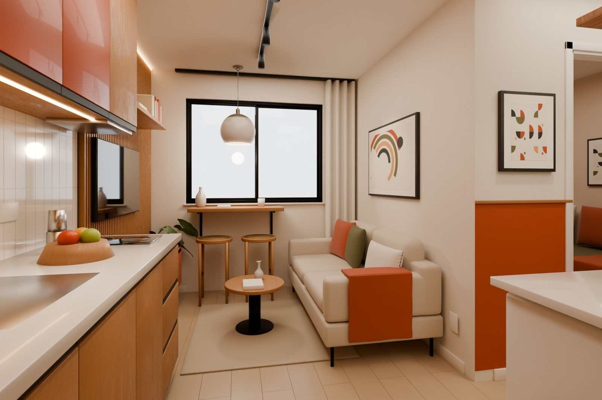
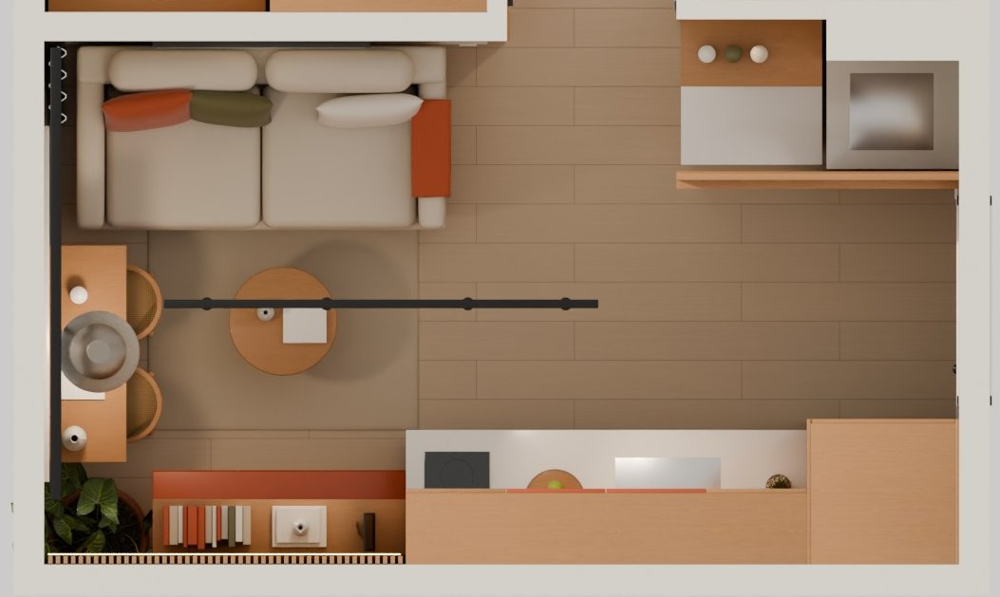
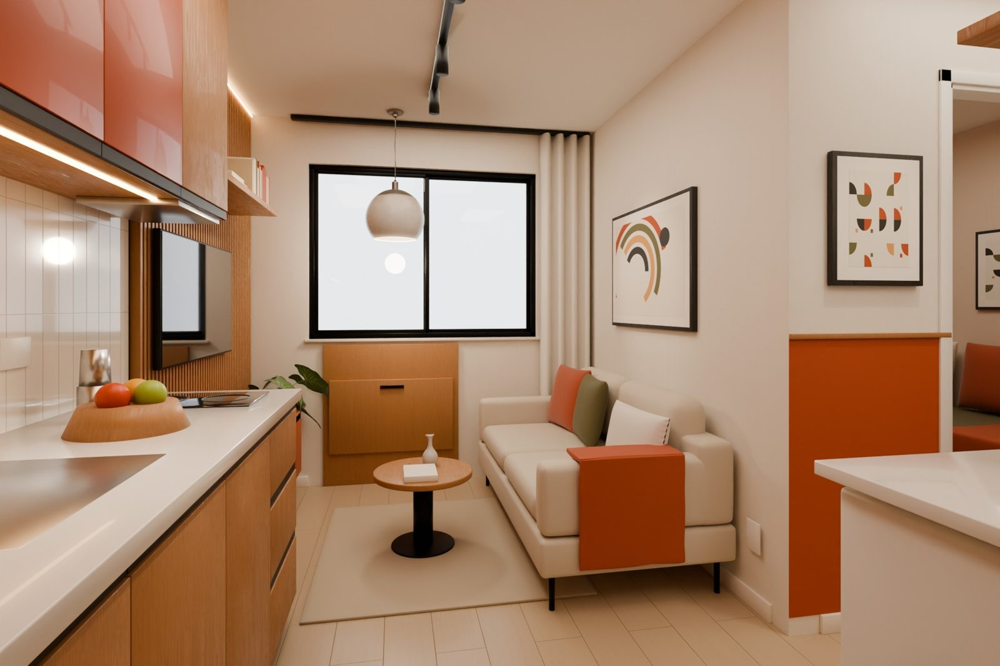
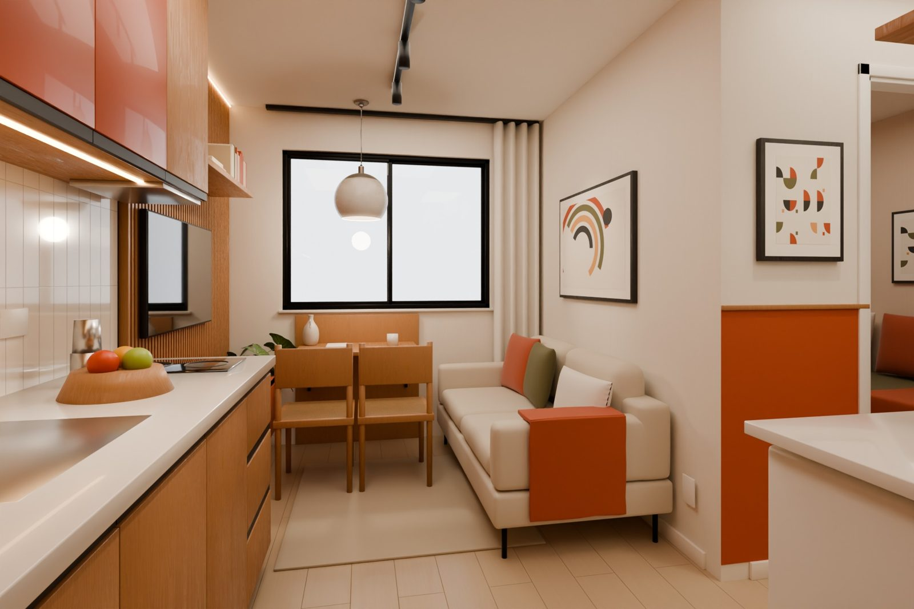
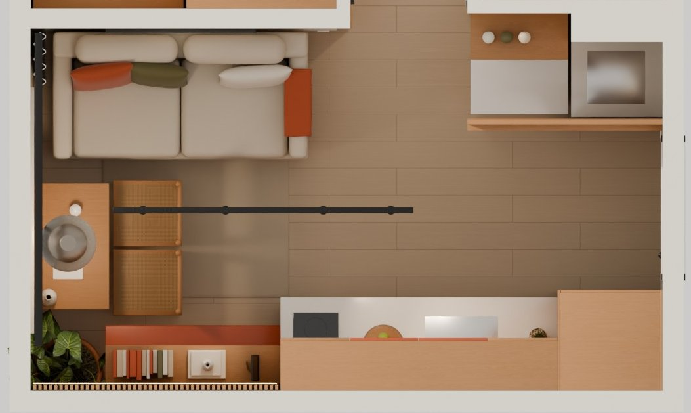
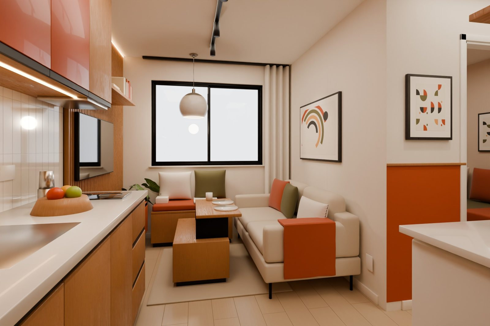
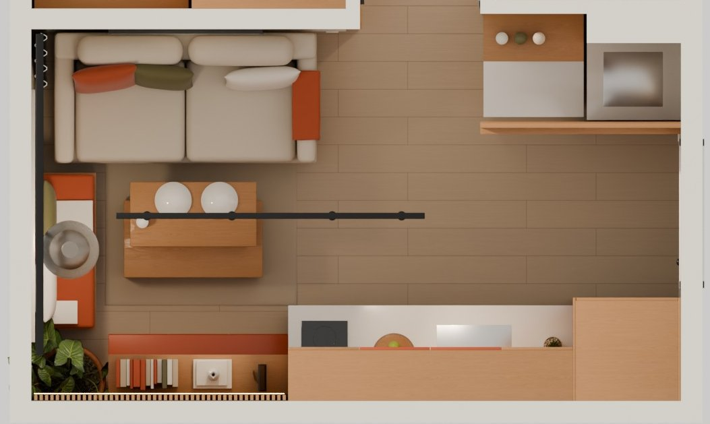
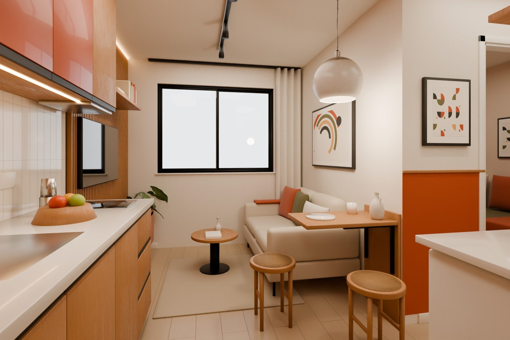
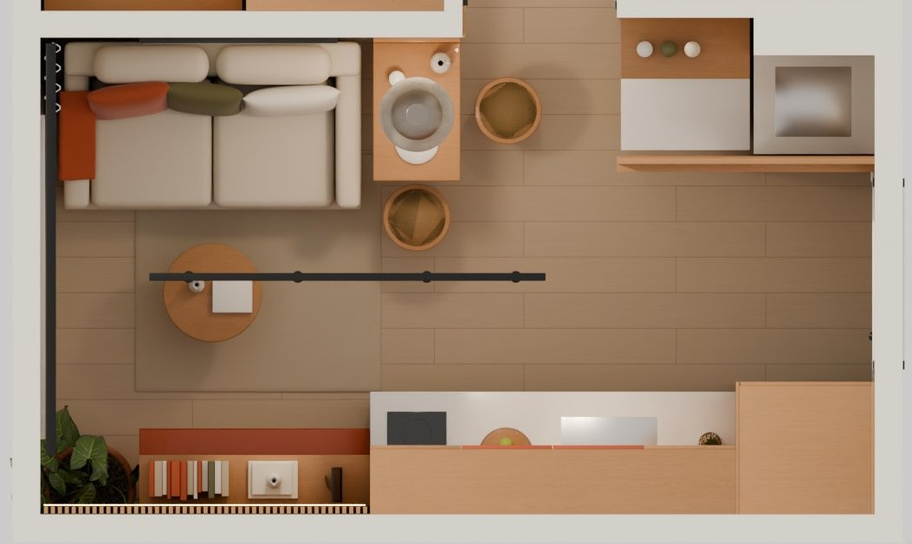

Onde comer na sala
A sala tem 2,41 m entre o sofá e a parede da TV, então uma mesa fixa no meio fica no caminho de quem assiste e de quem circula. Estas são quatro saídas que deixam o meio livre. Mesmo ponto de vista em todas, paleta Terra Paulista. Voltar ao projeto

Bancada na janela recomendada
Uma bancada de freijó presa na parede logo abaixo do peitoril, com mãos-francesas de metal, e duas banquetas altas que ficam encaixadas embaixo quando ninguém está comendo.
bancada 100 x 38 cm, altura 97 cm · banquetas Ø 37 cm, assento a 66 cm
- O meio da sala fica livre o tempo todo
- Come olhando a vista e com luz natural
- Serve de apoio para notebook e café
- Duas pessoas lado a lado, não frente a frente
- Banqueta alta é menos confortável para refeições longas



Mesa rebatível na parede
Um painel de freijó sob a janela esconde um tampo que abre para baixo, apoiado em braços articulados. Fechado, ocupa 6 cm. Aberto, vira uma mesa para duas pessoas sentadas.
tampo 84 x 50 cm, altura 75 cm · fechado: 6 cm de parede
- Mesa de verdade, em altura de refeição
- Fechada, a sala fica totalmente livre
- Precisa abrir e fechar a cada refeição
- Aberta, as cadeiras voltam para o eixo sofá–TV
- As cadeiras precisam ser guardadas em outro lugar


Sofá + mesa de centro elevatória
Sem área de jantar fixa: a mesa de centro tem um tampo que sobe até a altura de refeição e vem em direção ao sofá. O banco-baú sob a janela continua, agora como canto de leitura.
mesa 90 x 50 cm · tampo sobe de 40 para 63 cm
- Maior área livre e o banco continua com o baú
- Mesa de centro e de refeição numa peça só
- Comer no sofá é informal
- Ruim para receber alguém para jantar


Mesa retrátil ao lado do sofá
Trocando o sofá por um de 1,50 m sobra parede entre ele e o corredor. Ali entra uma mesa de freijó presa na parede, com braços articulados. Fechada, o tampo desce rente à parede e as duas banquetas baixas empilham na frente.
sofá 150 cm · tampo 44 x 70 cm, altura 75 cm · fechada: 6 cm de parede · banquetas Ø 34 cm, assento a 45 cm
- A janela e o meio da sala ficam livres
- Mesa de verdade, em altura de refeição
- Banquetas guardam embaixo da mesa ou empilhadas
- Sofá perde 20 cm
- Durante a refeição, a banqueta da lateral ocupa parte da entrada do corredor
- Uma pessoa na ponta e outra na lateral, não frente a frente
